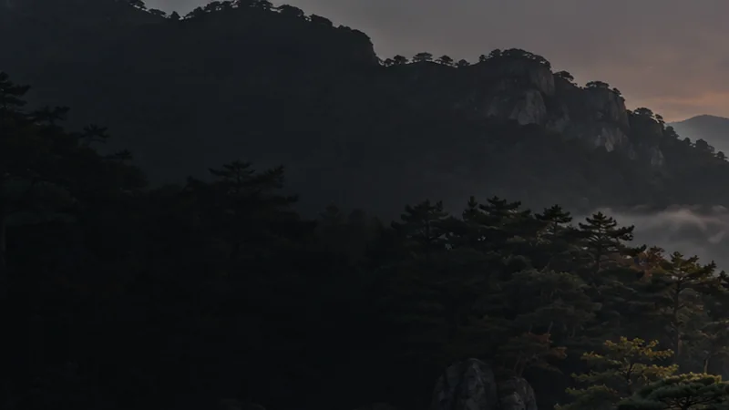

LISTEN · READ · REFLECT
빈칸 듣는 시간
세상이 아무리 소란스럽더라도,
당신의 방 안에는 언제나 침묵할 권리와
사색의 여백이 남아 있어야 합니다.

▶다산 정약용 《목민심서》무삭제 완역 오디오북 · 제3부[ ]여백사색고전의 지혜를 듣고 읽다
[ ]🎙여백사색
A QUIET ROOM FOR CLASSICS
고전의 지혜를, 편안한 목소리로
여백사색은 저작권이 만료된 고전과 자유롭게 이용할 수 있는 자료를 새롭게 번역하고 다듬어
오디오북과 역사 웹툰으로 전합니다. 다산 정약용의 《목민심서》부터 서양 고전 인문학까지,
귀로 듣고 눈으로 읽으며 오래 남을 생각을 함께 나눕니다.
포근한 ASMR
웹툰으로 만나다
물음을 발견하다
RECENTLY FROM THE CHANNEL
지금 만나는 영상
FOLLOW A STORY THROUGH TIME
작품 따라 천천히
01다산 정약용 《목민심서》백성을 살피는 목민관의 길
02베르너 예거 《파이데이아》그리스 고전과 서양 교육의 뿌리
03이사벨라 버드 비숍《한국과 그 이웃 나라들》 웹툰
04고균 김옥균 전집근대의 문턱에서 읽는 기록과 사상
재생목록에는 《일리아스》와 《오디세이아》, 로마사, 쇼펜하우어·하이에크 등 더 많은 고전과 사상가의 전집도 준비되어 있습니다.
A SMALL LISTENING GUIDE
당신의 하루에 맞춰
편안하게 들어보세요.
스마트폰 음량은 35~45% 정도로 시작해 보세요.
독서와 새벽 작업, 잠들기 전의 조용한 시간에도 곁에 두기 좋습니다.
🎧마음이 쉬어가는 청취 팁이어폰이나 스피커로 편안한 음량을 찾고,
오늘 듣고 싶은 작품을 천천히 골라보세요.
오늘 듣고 싶은 작품을 천천히 골라보세요.
WELCOME TO YOUR QUIET CORNER
잠시 머물러도 괜찮아요.
구독과 좋아요, 따뜻한 댓글은 다음 고전을 함께 나누는 힘이 됩니다.